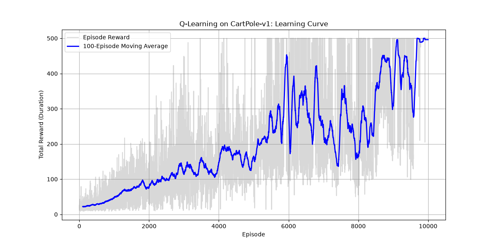

Hey! I built this small project to get some genuine, hands-on experience with Reinforcement Learning before my interviews. Instead of just calling a black-box library like stable-baselines3, I wanted to write the core logic myself so I can actually explain how it works under the hood.
Goal: Train an agent to balance a pole on a moving cart using Q-Learning from scratch.
I'm using the classic CartPole environment where a pole is balanced on a moving cart.
Since CartPole's state is continuous (there are infinite possible angles and speeds), I first had to discretize it. Think of it like throwing those exact numbers into a set of buckets or bins. This lets us build a finite "Q-table"—which is essentially a giant cheat sheet.
The Q-table maps every possible state to the expected future reward of pushing left vs. pushing right. When the agent takes an action, it looks at the reward it got and uses the Bellman update rule to update its cheat sheet. It basically says: "Okay, let me update my old assumption with this immediate reward I just got, plus the best possible scenario I can see from my new position."
If the agent only ever took the action with the highest Q-value, it would get stuck doing the same dumb thing over and over because it never learned anything else.
That's where epsilon-greedy comes in. Epsilon is basically a "randomness dial."
1.0, meaning the agent is just mashing buttons 100% randomly to explore the environment and see what happens.If you look at the learning curve generated by the script, you can clearly see the agent's journey:

If you want to run the training loop and see it learn from scratch locally:
pip install -r requirements.txt
python train.pyThis will train the agent and spit out a fresh learning_curve.png so you can see the progress yourself.